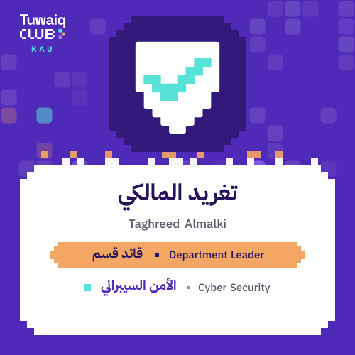
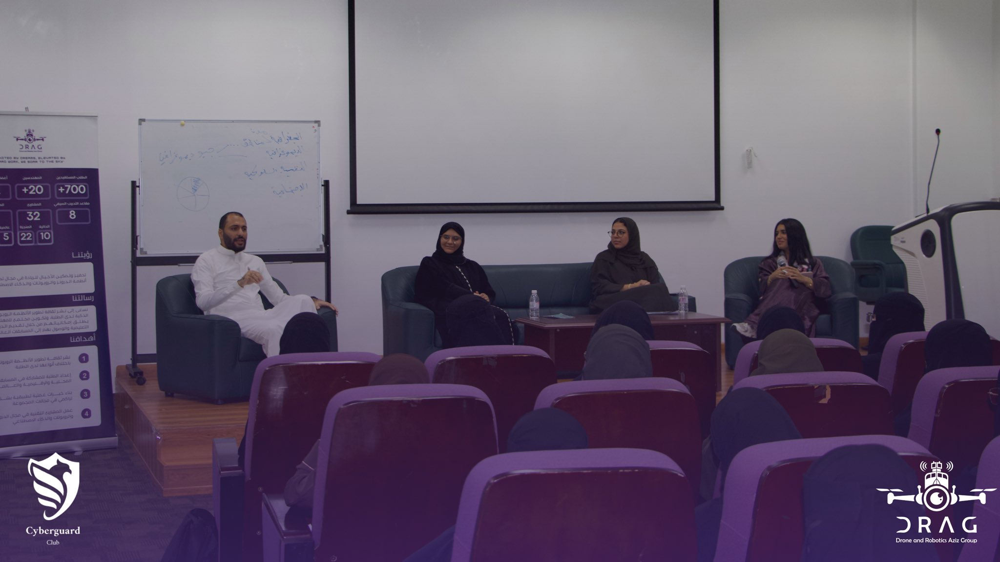
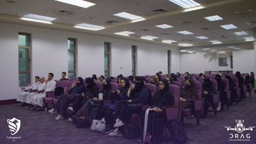

EDUCATION
Bachelor of Information Technology at King Abdulaziz University.
CPIT-405 / PERSONAL PORTFOLIO
 ID // TG-405
ID // TG-405
> DIGITAL FORENSICS
> INCIDENT RESPONSE
> NETWORK SECURITY
> THREAT ANALYSIS
PERSONNEL DATA
Bachelor of Information Technology at King Abdulaziz University.
Focused on digital forensics, incident response, networks and threat analysis.
Cyber Security Track Leader at Tuwaiq Club - KAU.
RECENT ACTIVITY

FILE_01Accepted as Cyber Security Track Leader at Tuwaiq Club - KAU.

FILE_02Participated in a discussion session combining cybersecurity and robotics, focused on protecting drones and robotic systems against cyber threats.

FILE_03An interactive discussion connecting cybersecurity principles with emerging robotic technologies.
Access completed Internet Applications labs and course projects.